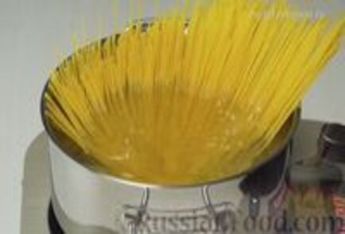
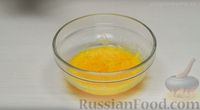

| Шаг 1 |
Спагетти варить 7-10 минут в кипящей подсоленной воде и откинуть на дуршлаг. |
 |
| Шаг 2 |
В сковороде разогрейте оливковое масло, положите чеснок и слегка подрумяньте. |
|
| Шаг 3 |
Ветчину/бекон мелко нарежьте, добавьте к чесноку и обжаривайте 5 минут. |
|
| Шаг 4 |
Сыр пармезан натрите на мелкой терке. Желтки взбить со сливками, немного подсолить. |
 |
| Шаг 5 |
Спагетти переложить в сотейник с чесноком и ветчиной/беконом. |
|
| Шаг 6 |
Добавить взбитые желтки и тёртый сыр, перемешать. Держать на огне 3 минуты.
|
|
| Шаг 7 |
Посыпать молотым перцем, украсить зеленью и подавать на стол.
|
|